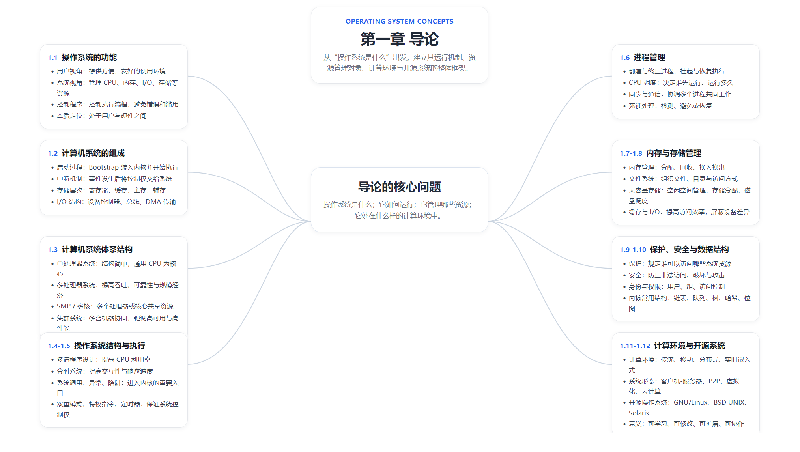
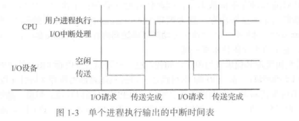
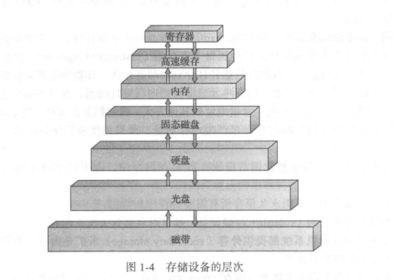
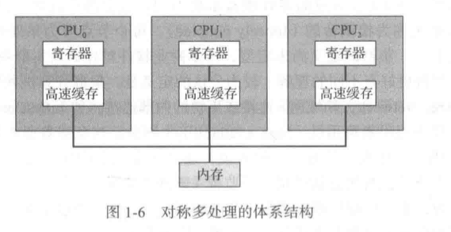
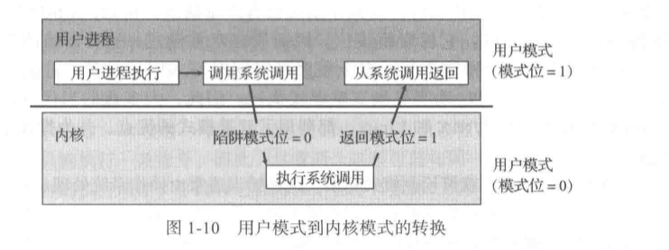

操作系统概论
第一章 导论

本章速览
操作系统（OS）是位于用户与计算机硬件之间的一层系统软件。- 可以把它理解成三种身份：
资源分配者：管理 CPU、内存、存储设备、I/O 设备控制程序：控制程序执行，避免错误和资源滥用扩展机器 / 虚拟机提供者：向上提供更易用的抽象
- 本章核心就是四个问题：
OS 是什么OS 怎么运行OS 管理哪些资源OS 运行在什么计算环境中
1.1 操作系统的功能
1.1.1 用户视角
- 从用户角度看，操作系统首先要解决的是：
让人更方便地使用计算机 - 不同设备上的 OS 侧重点不同：
PC：强调易用性、交互性、性能服务器 / 大型机：强调吞吐量、资源利用率、可靠性移动设备：强调触控、联网、低功耗、应用生态
- 用户通常并不直接接触硬件，而是通过 OS 提供的界面与服务来完成工作。
理解：用户关心的不是“硬件如何被调度”，而是“我能不能方便、稳定地完成任务”。
1.1.2 系统视角
- 从系统角度看，OS 是
资源管理者 - 它要管理的对象主要有：
CPU主存文件 / 外存I/O 设备
- 由于资源有限，OS 需要在多个程序、多个用户之间做
分配、协调和回收 - 另一方面，OS 还是
控制程序- 控制程序如何执行
- 防止程序错误使用设备
- 防止一个程序破坏其他程序或系统本身
1.1.3 操作系统的定义
- 对操作系统并没有唯一绝对的定义，但常见理解包括：
始终运行在系统中的核心软件管理资源并提供服务的软件集合用户程序和硬件之间的中介层
- 更直观地说：
- 向下，OS 面对的是
硬件 - 向上，OS 面对的是
应用程序与用户
- 向下，OS 面对的是
- 现代系统里，OS 往往不仅只有“内核”本身，还会配合大量系统组件共同工作。
- 在移动平台中，很多时候会连同
middleware / 运行时 / 框架层一起构成完整的软件平台。
1.2 计算机系统的组成
1.2.1 计算机系统的运行
- 现代计算机系统通常包含：
- 一个或多个
CPU 设备控制器主存- 通过总线连接起来的各类设备
- 一个或多个
- 系统上电后，需要先运行
bootstrap program（引导程序）- 一般保存在 ROM 或 EEPROM 中
- 负责初始化硬件
- 装入操作系统内核并启动运行
- 计算机运行过程中广泛依赖
中断（interrupt）- 硬件可通过中断通知 CPU 某个事件已经发生
- 软件也可通过异常、陷阱等机制进入内核
- CPU 的基本工作方式可以理解为：
- 取指
- 执行
- 遇到中断 / 异常时转去处理中断服务程序
- 完成后返回继续执行

1.2.2 存储结构
- 存储系统是分层的，典型层次从快到慢大致是：

- 一般规律：
- 越靠近 CPU，
速度越快、容量越小、价格越高 - 越远离 CPU，
速度越慢、容量越大、单位成本越低
- 越靠近 CPU，
- 主存通常使用
RAM- CPU 能直接访问
- 掉电后内容通常会丢失，因此是
易失性存储
- 辅助存储用于长期保存数据
- 容量大
- 速度慢
- 具有
非易失性
- 因此，程序真正执行时，通常都要先从外存调入主存。
理解：存储层次的目标，就是在“速度、容量、成本”三者之间做折中。
1.2.3 I/O 结构
- I/O 设备一般不会直接由 CPU 逐位操作，而是通过
设备控制器管理 - 设备控制器通常维护：
- 状态信息
- 控制信息
- 数据缓冲
- CPU 与设备之间的数据传输有多种方式：
- 由 CPU 亲自搬运
- 使用
DMA（Direct Memory Access）
DMA的意义：- 大块数据传输时，不必让 CPU 一次次参与每个字节的搬运
- 设备控制器可直接与主存交换数据
- CPU 只需在开始和结束时参与控制
- 这样可以减少 CPU 在 I/O 上的无效等待。
1.3 计算机系统的体系结构
1.3.1 单处理器系统
- 传统系统大多是
单处理器系统 - 只有一个主 CPU 负责执行通用指令
- 即使某些设备内部也有专用处理器，它们通常也不算作真正意义上的多处理器系统
- 这种结构简单，但扩展能力有限。
1.3.2 多处理器系统
多处理器系统指多个处理器共享总线、时钟、内存等资源协同工作- 优点主要有：
提高吞吐量规模经济：共享资源，整体成本更优提高可靠性：部分部件失效时系统不一定整体崩溃
- 常见形态：
非对称多处理（AMP）:主处理器负责控制,从处理器负责特定任务对称多处理（SMP）:所有处理器地位更对等,共享内存，共同运行 OS
- 现代 CPU 还常通过
多核（multicore）的形式把多个计算核心集成到一个芯片上。 - 多核进一步引出了
NUMA、缓存一致性等更复杂的问题。

1.3.3 集群系统
集群系统往往由多台独立机器通过高速网络连接组成- 每台机器本身可能都有自己的 CPU 和内存
- 集群目标通常有两类：
高可用（High Availability）高性能计算（HPC）
- 某一节点失效时，其他节点可接管服务，提高系统连续性。
- 集群往往还会配合共享存储或分布式锁等机制。
1.4 操作系统的结构
- 现代操作系统的重要目标之一，是让
CPU 尽量忙起来 - 由此引出了两个核心概念：
多道程序设计（Multiprogramming）
- 主存中同时放入多个作业
- 当一个作业因为 I/O 等原因阻塞时，CPU 可以切去执行别的作业
- 核心目标是：
提高 CPU 利用率
分时系统（Time Sharing）
- CPU 在多个作业 / 用户之间快速切换
- 每个用户都能较快得到响应
- 核心目标是：
提高交互性，让用户感觉自己独占机器
理解：
多道程序设计关注的是“别让 CPU 闲着”分时系统关注的是“别让用户等太久”
- 这就引出了 OS 的一个核心职责：
CPU 调度 - OS 需要决定：
- 谁先运行
- 运行多久
- 何时切换
- 被阻塞后如何恢复
1.5 操作系统的执行
- 操作系统是
事件驱动的 - 如果没有任务和中断，CPU 不会无休止地替 OS 做事；一旦发生事件，OS 就会介入处理
- 能让 OS 获得控制权的典型事件有：
硬件中断异常系统调用
1.5.1 双重模式与多重模式的执行
- 为了保护系统，硬件通常支持至少两种运行模式：
用户模式内核模式
- 用户程序通常运行在
用户模式 - OS 内核运行在
内核模式 - 某些敏感操作只能在内核模式下执行，这些被称为
特权指令- 例如直接操作 I/O
- 修改内存管理状态
- 控制中断
- 用户程序如果想请求操作系统服务，通常通过
系统调用（system call） - 系统调用会让执行流从用户态切换到内核态，等服务完成后再返回。

理解：双重模式的本质，是把“能做危险操作的人”限制在 OS 手里。
1.5.2 定时器
定时器是 OS 保持控制权的重要硬件机制- 它可以在指定时间后触发中断
- 这样做的原因是：
- 防止用户程序长时间霸占 CPU
- 支持时间片轮转
- 避免系统失控
- 如果没有定时器，一个错误或恶意程序可能永远不把 CPU 交出来。
1.6 进程管理
进程可以看作程序的一次执行过程- OS 需要负责进程的全生命周期管理，主要包括：
- 创建和删除进程
- 挂起和恢复进程
- 调度进程运行
- 提供进程同步机制
- 提供进程间通信机制
- 处理死锁问题
- 进程管理是 OS 最核心的职责之一，因为 CPU 不会直接“运行文件”，而是运行
进程
1.7 内存管理
- 内存是 CPU 可直接访问的关键资源，因此必须精细管理
- OS 在内存管理上的核心任务包括：
- 记录哪些内存正在被使用、由谁使用
- 决定哪些进程和数据应该放入内存
- 分配和回收内存空间
- 本质上，内存管理是在解决三个问题：
谁在用能不能再分谁该进、谁该出
1.8 存储管理
1.8.1 文件系统管理
- 操作系统通过
文件系统管理长期保存的数据 - 文件系统的典型职责包括：
- 创建和删除文件
- 创建和删除目录
- 提供文件和目录操作原语
- 把文件映射到外存
- 备份数据
- 控制访问权限
- 文件系统是“用户视角的数据组织方式”。
1.8.2 大容量存储器管理
- 由于主存容量有限且易失，系统必须依赖
磁盘 / SSD等大容量存储设备 - OS 在这部分的工作主要包括：
空闲空间管理存储分配磁盘调度
- 目标是提高空间利用率和访问效率。
1.8.3 高速缓存
缓存（cache）的核心思想：把“可能再次访问的数据”放在更快的地方- 这样可减少访问慢设备的次数
- 缓存思想不只出现在 CPU Cache，也会出现在：
- 页缓存
- 磁盘缓存
- 网络缓存
- 设计缓存时需要考虑：
- 缓存大小
- 替换策略
- 一致性问题
1.8.4 I/O 系统
- I/O 是 OS 的重要组成部分
- OS 需要向上提供统一的 I/O 接口，向下屏蔽设备差异
- 常见机制包括：
缓冲（buffering）缓存（caching）假脱机（spooling）设备驱动程序
- 目标是提高效率，并减少应用程序直接面对硬件细节的负担。
1.9 保护与安全
保护（protection）关注的是：- 系统内部不同进程、不同用户之间，谁可以访问什么资源
安全（security）关注的是：- 系统如何抵御外部攻击与内部滥用
- 典型安全需求包括：
- 用户身份认证
- 访问控制
- 权限划分
- 防止非法提权
- 系统常使用
user ID、group ID等机制区分身份与权限。 - 一句话理解：
保护更偏“规则与边界”安全更偏“防攻击与防破坏”
1.10 内核数据结构
- 内核不是只靠“代码逻辑”工作，它还高度依赖各种
数据结构
1.10.1 列表、堆栈及队列
链表：适合动态增删栈：后进先出，常用于函数调用、内核控制流等场景队列：先进先出，常用于调度、缓冲、等待队列等场景
1.10.2 树
- 树适合表示层次关系或支持高效查找
- 常见包括：
- 二叉树
- 二叉查找树
- 平衡二叉查找树
- 在内核中，树常用于索引和组织对象。
1.10.3 哈希函数与映射
- 通过
哈希函数把关键字映射到表项位置 - 目的是加速查找
- 典型结构就是
hash map - 需要考虑
哈希冲突的处理方式
1.10.4 位图
位图（bitmap）适合表示大量“只有两种状态”的资源- 例如：
- 某块磁盘块是否空闲
- 某页内存是否已分配
- 优点是节省空间、判断迅速。
1.11 计算环境
1.11.1 传统计算
- 传统计算环境从大型机逐渐发展到个人计算机
- 随后又出现通过网络互联的工作站、服务器等
- 重点从“单机计算”逐步转向“网络化计算”
1.11.2 移动计算
- 移动计算强调：
- 便携性
- 无线连接
- 低功耗
- 触控与传感器支持
- 移动 OS 与桌面 OS 在资源约束、交互方式、应用模型上都不同。
1.11.3 分布式系统
分布式系统由多台计算机协同工作- 用户可能感受到的是一个统一系统，但底层实际上由多个节点组成
- 关键挑战包括：
- 通信
- 一致性
- 容错
- 资源共享
1.11.4 客户机—服务器计算
Client-Server结构中：- 客户机发起请求
- 服务器提供服务
- 典型如：
- Web 服务
- 数据库服务
- 文件服务
- 这种结构职责清晰，便于集中管理。
1.11.5 对等计算
P2P系统中，各节点地位更接近- 一个节点既可以请求资源，也可以提供资源
- 优点是去中心化、扩展性较好
- 缺点是控制与管理更复杂。
1.11.6 虚拟化
虚拟化允许在同一套硬件上运行多个逻辑上独立的系统环境- 其核心是通过
VMM / Hypervisor管理资源隔离与复用 - 好处包括：
- 提高资源利用率
- 方便测试与部署
- 提供隔离性
- 这也是云计算的重要基础技术之一。
1.11.7 云计算
云计算本质上是通过网络按需提供计算、存储和软件服务- 常见部署方式：
公有云私有云混合云
- 常见服务模型：
SaaSPaaSIaaS
- 用户更关心“服务可用”，而不必自己直接管理底层所有硬件。
1.11.8 实时嵌入式系统
嵌入式系统往往针对特定任务设计实时操作系统（RTOS）强调：- 在严格时间约束内完成响应
- 常见于：
- 工业控制
- 车载系统
- 家电
- 医疗设备
- 这类系统通常更关注
确定性，而不是单纯追求高吞吐量。
1.12 开源操作系统
1.12.1 历史
- 开源操作系统的发展，与 UNIX、GNU 运动以及互联网协作密切相关
GNU强调自由软件思想- 这推动了大量系统软件以开放方式传播与改进。
1.12.2 Linux
Linux内核由 Linus Torvalds 发起- 与 GNU 工具链结合后，形成了广泛使用的
GNU/Linux - Linux 生态中存在很多发行版，如：
- Ubuntu
- Fedora
- Debian
- SUSE 等
- Linux 成为服务器、嵌入式、云计算等环境中的重要系统。
1.12.3 BSD UNIX
BSD是 UNIX 体系的重要分支- 对网络功能、系统设计等方面影响很大
- 典型系统如 FreeBSD、OpenBSD、NetBSD
1.12.4 Solaris
Solaris是基于 UNIX 思想的重要商业系统之一- 在企业级环境中曾长期具有代表性。
1.12.5 用户体验到的开源操作系统
- 对普通用户而言，最直观接触开源 OS 的方式通常是：
- 安装 Linux 发行版
- 在虚拟机中体验
- 使用 Live CD / Live USB 启动
- 开源系统的意义不只是“免费”，更在于：
- 可学习
- 可修改
- 可分发
- 可参与社区协作